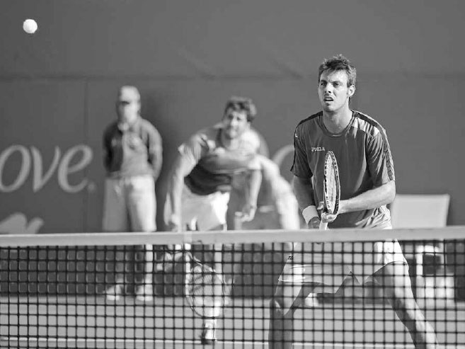
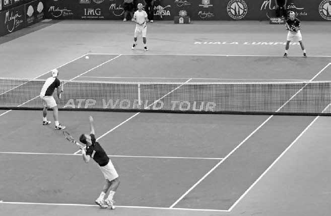
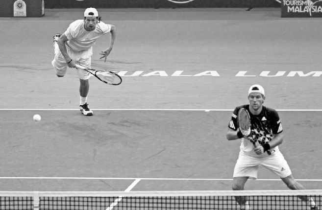
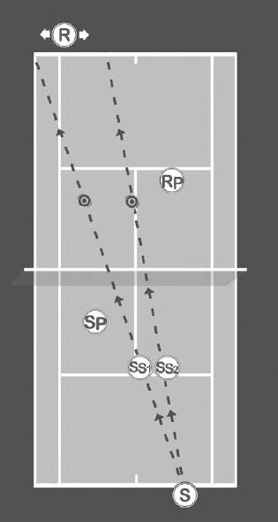
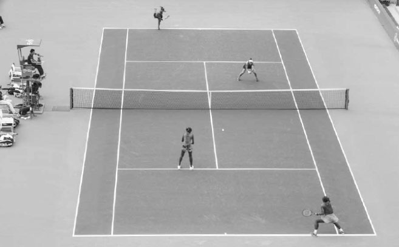
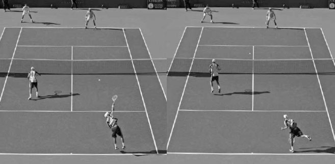
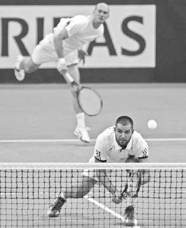
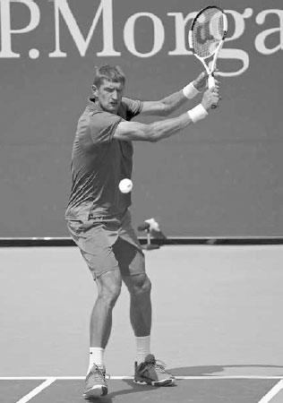

Doubles¶
With four players on the court, each with different strengths and weaknesses, there are also more tactical options to consider than when playing singles. In this chapter, I focus on the core tactical principles to help you play your best doubles. I begin by explaining the role of each of the four players and various formations and strategies available to each player. Next, I provide instruction on how to attain optimal court positioning, poaching, and how to elect the right shot given the circumstances. Then I discuss game plans, communication, how to choose the ideal partner to complement your game, and finish the chapter with tips for doubles practice.
I. The Role of Each Player
A SET OF DOUBLES IS PLAYED in four game rotations; at the end of each game, players change their role and, therefore, their responsibilities. The more you and your partner do each of your "jobs" well, the more likely you will perform as a cohesive and successful team. In each role, it is important that you know what tactics and shots work best and what court positioning options can be used to tilt the point in your favor. In this section, I will discuss the four roles: the server, the server's partner, the receiver, and the receiver's partner.
Setting up their partner at net should be a main consideration of the server.
1. THE SERVER
Winning service games on a regular basis is paramount to the success of a doubles team. By using the advantage of being first to strike the ball and serving well, you should be able to make breaking serve difficult for your opponents and stay ahead or even in the set.
There are five main considerations for the server in doubles.
A. SETTING UP YOUR PARTNER AT NET TO THEIR GREATEST ADVANTAGE
The best way to do this is to serve down the center line towards the "T." This serve limits the angles available for your opponent to pass your net partner down the line, allowing them to move towards the middle of the court and exert a greater influence on the point.
Mixing up the placement and spin on the serve will keep your opponents off rhythm and help you hold serve.
The serve at the returner's body is another effective option to set up your partner at net. By"handcuffing" the returner, they will not be able to swing freely and likely offer easy balls for your net partner to pounce upon. Keep in mind that because there are two opponents defending the court in doubles, gaining positional advantage from serving wide is less important as compared to singles; thus, the serve at the body should be used more frequently.
The wide serve can also be effective; however, it does have negative impacts. It forces the server's partner to cover the alley, leaving them less able to intercept balls hit in the middle of the court. Additionally, the partner's movement to the alley forces the server to cover a larger portion of the court. However, if you can hit the wide serve fast and force your opponent to hit late on the return, you can set up your partner at net with an easy volley.
B. ENSURING HIGH FIRST SERVE PERCENTAGE
While achieving a high first serve percentage is important in singles, it is even more crucial in doubles because the difference between the first and second serve winning percentage is usually larger. The desired first serve percentage for doubles is 75 to 80% opposed to 60 to 65% in singles.
In order to achieve a high first serve percentage, aim for a bigger target towards the middle of the service box and use spin serves more frequently. If you have a strong second serve, you can afford to go for bigger first serves, with the goal of winning points from missed returns. If your second serve isn't a strength, it is advisable to slow down your first serve and increase your focus on placement and consistency.
C. MIXING IT UP
The server should keep the returner off rhythm by mixing up the serve with different placements and spins. Serve wide, down the "T," or directly at the returner's body. These different locations will reduce your opponent's ability to anticipate and get a jump start on their return. As discussed in Chapter Five, you also have four different spin serves (flat, slice, slice-topspin, and kick).
These spins will change the trajectory and speed of your serve and hopefully produce some mistimed returns.

Jurgen Melzer's (right) prior knowledge of his partner serving down the "T" helps him to get a head start on his movement to the middle of the court.
D. CHOOSING INTELLIGENT SERVE POSITIONING
You can serve from a position that creates the best angle to pick on the returner's weaker groundstroke. For example, if the returner has a weaker backhand, you can serve from closer to the middle on the deuce side or closer to the alley on the ad side. This will help the serve angle towards the returner's backhand. If you feel your opponent is in a groove on the return, try standing several feet left or right of your usual serving spot to present them with a different angle.
E. COMMUNICATING WELL
Talk with your partner about where you are going to serve so they can be ready to shift to the best position for the return. For example, if you tell your partner ahead of time that you are serving wide, they can be ready to cover the alley on the return. Or if you plan to serve up the "T," then your partner at net can be on high alert to attack any weak returns hit to the middle of the court.
After the serve you have two choices: serve and volley or serve and stay at the baseline.
1. SERVE AND VOLLEY:
If you are serving and immediately moving forward to volley, it often makes sense to use more spin on the serve. Additional spin will cause the ball to travel more slowly through the air and enable you to get closer to the net for your first volley. Remember to follow the path of the ball as you move forward after the serve and perform your split step when your opponent hits the return (right).
The general rule for the server is to hit the first volley deep down the middle to limit the possible angles available to the returning team. If your opponents are playing in the common one-up, one-back formation to return serve (see R and RP right) and the return is hit below the net, the first volley should be hit low and deep to the receiver (R); the priority being to keep the ball away from the receiver's partner (RP). If the return is high, it often makes sense to hit the ball with power down at RP's feet.
2. SERVE AND STAY:
Most recreational players elect to serve and stay back on the baseline; increasingly, professional players are doing the same due to the improvements they have made on the return of serve. This style of play leads to many cross-court rallies with one player up at the net and one player back at the baseline. The goal of the server during a cross-court rally is to hit (a) wide enough to keep the ball away from RP, (b) deep enough to keep R behind the baseline, and (c) fast enough to sometimes rush the opponents and set up their partner at net (SP) for an offensive volley.
KEY: S - SERVER SP - SERVER'S PARTNER R - RECEIVER RP - RECEIVER'S PARTNER Your serve's location will influence where to split step when you serve and voley. Serving to the left side of the service box results in the split step also moving left (SS1). Serving to the right side of the service box, on the other hand, moves the split step to the right (SS2). The server's partner (SP) and receiver's partner (RP) should also move left and right following the direction of the serve to best cover the court.
Who should serve first on your team? If all other skills are fairly equal, the best server should serve first; this will result in the better server often serving more games. There are occasions where the stronger player may be the weaker server and then the decision is more complicated. The wind and sun are a consideration as well. If a player has a better kick serve, then they should serve with the wind. When the wind is assisting, the topspin of the kick serve will help bring the ball down into the service box. If a player has a high ball toss, it will be better for them to serve from the end with the sun at their back. If your team happens to be a right-handed/left-handed combination, you can avoid the issue of the sun and, additionally, use the cross wind to its advantage with a bigger curve on the slice serve from both sides of the court.
Most players stand in the middle of the service box when their partner is serving (facing right).
2. THE SERVER'S PARTNER
The server's partner can put a lot of pressure on the returner by being active and putting away weak returns. They can also induce errors and anxiety from the returning opponents due to distracting movements and memories of successful poaching (see page 251) on previous points.
A. POSITIONING
Where the server's partner stands at net during the serve is important. Usually, the best position is around the middle of the service box (below, facing right). Standing too far from the net makes the poach less effective because the opposing team has more time to react to the shot, while positioning too close to the net makes the server's partner vulnerable to the lob and reduces the chances of poaching on returns hit in the middle of the court.
Bob Bryan (foreground left) moves forward and split steps as his brother serves the ball.
Exactly how far from the net you stand to begin the point will depend largely on how fast you can move backwards to defend the lob and the quality of your partner's serve. If you cover overheads well and your partner's serve is strong, you can play closer to the net. If the opposite is true, play deeper in the court.
Your opponent's return of serve tendencies will play a role too. For example, if your opponent rarely lobs, you can play closer to the net. If they lob frequently, then play further away from the net. You may want to start a little farther back in the service box and take one step forward as your partner hits the serve (above). This movement forward will get your body momentum started, making it easier to cut across the court and potentially pick off a weak return. Keep in mind that your opponents can't pick up on forward movement nearly as easily as sideways movement, so sneaking forward following your partner's serve or during the rally can be an excellent tactic.
How close you position yourself to the doubles alley is also an important consideration. If you stand too close to the alley, you might prevent yourself from getting beaten with a down-the-line passing shot, but you limit your chances of poaching and make the cross-court return easier for your opponents. Additionally, hugging the alley forces your partner to cover most of the court, leaving bigger gaps in the court for your opponents to exploit.
Once the rally begins, move quickly into the best position based on where the ball is located and how the point is progressing. That is, shift right and left following the direction of the ball, and move forward when the rally is in your favor and backward when the rally is turning negative. Typically, the server's partner will follow the above positioning guidelines, but there are two other serving formations that can make strategic sense under the right circumstances: the "I" and Australian formation.
B. "I" FORMATION
The "I" formation starts with the server serving a foot from the center hash mark, and the net player straddling near the center line and crouching low to avoid getting hit by the ball (below). Before the serve, the net player and the server communicate as to the direction the net player will move. If the net player moves right, the server will move left, and vice versa. This formation can cause problems for opponents on their return because they don't know which way the net player will move after the serve. The "I" formation is not only an effective way to disrupt an opponent's rhythm, but also can get a strong net player more involved to positively influence the point.
In the "I" formation (above), the net player crouches near the center line on the opposite side of the server. In the Australian formation, the net player also stands near the center line but on the same side as the server.
C. AUSTRALIAN FORMATION
In the Australian formation, both the server and the net player line up on the same side as the court. The server serves a foot from the center hash mark, while the net player is approximately two feet from the center line.
Many players feel more comfortable returning cross court in the same direction from which they received the serve. Playing the Australian formation forces your opponents to change the direction of their return and hit down the line (and over the highest part of the net). If your opponents are consistently hitting strong cross-court returns, using the Australian formation is a terrific way to upset their groove.
The Australian formation, like the "I" formation, is also particularly effective when one partner is considerably stronger. A team can use this formation when the weaker player is serving; this allows the stronger player, positioned at the net, to take up more of the court, and be more involved in the point. It also allows a team to take best advantage of its strongest shots. For example, if your forehand volley is particularly strong, then using the Australian formation when your partner is serving to the ad side allows you to move to the right and poach using your forehand volley.
For all their advantages, the "I" and Australian formation should be used selectively by most players because the server is forced to move sideways after the serve, which can be troublesome. Performing the serve and volley tactic while using these formations can be risky for this reason. Still, when used under the right circumstances, or as a surprise move, these formations can be very effective.
3. THE RECEIVER
Generally speaking, the doubles return has to be more precise and faster than the singles return. The presence of the opposing net player places importance on hitting the cross-court return low and fast over the net.
If your opponents are serving and volleying, a good place to aim the cross-court return is to the outside "T" where the singles line meets the service line. This will place the ball at the server's feet if they serve and volley and wide enough to make the net player's poach very difficult. If the server is staying at the baseline, then the cross-court return should be aimed deep towards the baseline.
While the vast majority of returns will go cross court, if playing a team that poaches often, hitting down-the-line returns will keep the net person more stationary and less aggressive. It is a good idea to do this early in the match to send your opponents the message that their poaching is fraught with danger.
Hitting the return down the line can also be an effective ploy if the net player is uncomfortable at net or a much weaker player than the server. The lob return is also a good option against a strong poaching opponent. Like the down-the-line return, the lob return can foil an aggressive net player. A successful lob will also demand movement from your opponents and force them to defend against a high bouncing ball.
A. THE SLICE RETURN
While most doubles returns will be driven with topspin or lobbed, a terrific third option is to use the slice return. There are two main reasons why slice returns are an essential part of a good doubles player's return of serve repertoire.
First, it is easier to control the height and depth of the ball. These are helpful qualities for keeping the ball away from the opposing net player. Second, slice returns can be executed quickly and therefore provide different court positioning and tactical options. For example, if your opponents are holding serve comfortably when receiving your topspin returns from behind the baseline, take advantage of the slice swing's expediency, and try a slice return from inside the baseline. This movement forward may upset your opponents' rhythm as well as make a poach more difficult by shortening the time available for the opposing net player to cross to the middle of the court. Another option is to hit the slice groundstroke return from inside the baseline and immediately move forward quickly to the net: the "chip-and-charge" play. This places pressure on the server to hit a passing shot immediately following the service motion. You can also mix up your slice returns with drop shots if your serving opponent is staying on the baseline. The drop shot and the slice returns have similar backswings and therefore increase your ability to disguise the drop shot and surprise your opponent.
COACH'S BOX: The mistake some receivers make on a down-the-line return is to try to put the ball in the alley. This leaves little margin for error. It is wiser to aim directly at the net person or at the singles line. This gives your shot a healthy margin for error and often results in an awkward volley from the net player. Also, don't let the fact that there is someone at the net make you anxious and cause you to rush the swing. Many players return more consistently cross court than down the line for this reason. To relax the mind, imagine the net person is invisible and visualize a down-the-line target deep in the court to aim your shot.
The compact nature of the slice backhand swing makes it a good shot to use on the return before attacking the net.

Serena Williams (left) stands well inside the baseline to attack a second serve return.
B. THE SECOND SERVE RETURN
A weak second serve effectively becomes a short ball that you can prepare for because the ball must land in the service box. It often represents the best chance to attack or use your favorite shot during the point. After the serve, your opponent has use of your entire side of the court and your ability to plan ahead is limited.
Before the second serve, you and your partner should move forward two or three feet and position yourselves in an aggressive formation, letting your opponents know that you intend to take control of the point following the return. Keep in mind, you can also favor your strongest groundstroke by positioning yourself more to the left or the right to increase the chances of the second serve going to your preferred groundstroke. Because you have a smaller area to cover in doubles, positioning yourself to favor your strongest groundstroke doesn't put you hugely out of position like it would in singles.
Therefore, be quick on your feet and try to dominate on the second serve return by using your best groundstroke as often as possible.
4. THE RECEIVER'S PARTNER
Receiver's partner is often the position that requires the quickest reflexes and fastest movements. Here, you must make quick adjustments forward and back and left and right, depending on the quality and direction of your partner's return.
A. POSITIONING
Against most teams, if your partner is receiving serve, you should stand around the service line slightly closer to the center line than the singles line (opposite foreground). Your stance should be angled so you are facing the opposing net player. Your focus should be on this player because they represent the closest opponent and, therefore, the person whose shot you will have the least amount of time to react to. Once the return is made cross court to the server, move forward towards the middle of the service box and face the server. During the rally, your feet should always pivot so you are facing the opponent who is hitting the ball to facilitate faster movement and a quicker reaction.
If your partner hits a powerful, low return, move forward to the net and put pressure on the server's first volley or groundstroke (above). If the server pops up the volley or groundstroke off your partner's strong return, move forward diagonally and intercept the ball with an aggressive volley. On the other hand, if your partner floats a high return, take a step back to buy some time and give yourself a better chance of returning the fast volley or groundstroke that will likely be fired to your side of the court. If your partner hits the return down the line at the net player, shift towards the "T" area to cover the gap in the middle of the court (next page). If your partner hits a sharply angled cross-court return, follow the flight of the ball and protect your alley.
Nenad Zimonjic (foreground) recognizes his partner's good return and quickly moves forward.
B. TWO-BACK FORMATION
When your opponent has a powerful serve and your partner is struggling to return serve, you have the option to move back and start the point positioned near the baseline. This is called the two-back formation and it is often a wise choice when you are facing a strong server, particularly when returning the first serve.
Above, we see the synchronization of movement executed by the pros. As Bob Bryan (facing left) begins his movement to the right to return a wide serve, Mike Bryan (facing right) pivots his right leg at the same angle as his brother and also begins shifting to the right. Below, after Bob Bryan attempts a down-the-line passing shot, Mike Bryan moves further to the right to cover the middle and defend his opponent's highest percentage shot option, the volley through the middle of the court.
With the receiver's partner positioned at the baseline (right background), the serving team doesn't have an easy target to volley through.
There are three main advantages to the two-back formation (above). First, moving back to the baseline removes an easy target for an aggressive net team's volley. Without a target to aim for, many volleyers become less confident in their shot decisions and make more mistakes. Second, by setting up in the two-back formation, there is less pressure to hit fast and low over the net to protect the receiver's partner, therefore, your team can hit returns with less speed and higher over the net for more consistency. Third, you can extend more points by using lobs and passing shots, testing your opponents' skill and patience. This formation is particularly effective if you and your partner's groundstrokes are superior to your volleys or if the opposing team hits groundstrokes poorly, making an extended rally work in your favor.
The pros follow the ball right and left to best cover the angles available to their opponent.
II. Court Positioning
WATCHING TOP PROFESSIONALS play doubles, you can see clearly how well they move without the ball and how hard they work to establish the best location on the court to cover the angles and likely shots from their opponents (above). They flow with the game moving quickly to the right, left, forward, or back following the ball around the court as if it was some kind of powerful magnet. Sometimes their movement to establish good positioning is large, but most times during a rally it is slight due to the brief time it takes for the ball to travel across the court. But even if the movement is small, they know it can make the difference between being able to reach shots or not or having a split second longer to play a balanced shot instead of being rushed. Court positioning is a crucial aspect of doubles play and is something every tennis player can do well.
In this section, I first discuss why playing the net together in the two-up court position is a formation you should be striving to establish in your doubles play. Next, I talk about court position considerations for the two-up and one-up, one-back formations. There are also court positioning concerns when lobs and overheads are played.
1. ADVANTAGES OF THE TWO-UP FORMATION
Controlling the net as a team is an important goal in doubles. First, because there is such little time to react to a volley, doubles teams who attack the net well together can make the opposing team constantly feel rushed and defensive. Second, once a team is positioned at the net together, the opposing team must come up with a quality shot to stay in the point. If the opposing team doesn't hit the ball low, fast, or high and deep, the net team will seize the advantage. This pressure can result in many "hidden" points won by errors stemming from your intimidating presence at net. On the other hand, if one player is on the baseline, the opposing team can direct a mediocre shot to the baseline player and pay less of a price. Third, when the ball is above the net, the net team has the advantage of hitting down into a visible court, while the baseline player or players on the opposing team must hit up into a court blurred by the net.

Serena Williams seizes upon a short ball to join her sister at net and gain the positional advantage.
For these reasons, while hitting from the baseline, players should be ready to pounce on the short ball and transition forward to the net (above). The service line represents a good demarcation of the court; balls that land inside the service box are usually appropriate opportunities to move forward from the baseline and attack the net. If the ball lands here, you will usually hit your first volley close enough to the net to be an effective volleyer. Other methods to move forward from the baseline include lobbing down the line, playing a drop shot, or hitting a high arcing topspin crosscourt shot that provides time to run forward and establish good net position.
Don't be discouraged if you don't see immediate results from attacking the net. Some players lose confidence with their net play too quickly after being on the receiving end of a couple of successful passing shots or lobs. Sometimes it takes a few games to pick up on your opponents' tendencies and time your volleys. Remember that over the course of the match playing the the net well together will place pressure on your opponents and help you win.

The Murray brothers have their weight forward as they split step together at the net always looking to attack the ball.
When the pros sense a lob isn't happening, they like to get as close to the net as possible.
2. TWO-UP COURT POSITIONING
Once in the two-up formation, it is important you move as a team. For example, if your partner is pulled left to hit a volley, you should move simultaneously left the same distance. If you don't move together in this way, you will leave an exploitable gap in the middle of the court. A good rule of thumb in covering the court is to move with your partner as if you have a rope tied between you. This image reinforces the need for the movement around the court to be done in chorus. When the ball is on the other side of the court, you should also move as a team to counter your opponents' use of angles. For example, if you hit a cross-court volley to the ad side alley, you and your partner should shift right. The wider your team hits the ball, the greater the movement in that direction to cover the angles available to your opponent on their passing shots.
Following a defensive volley, the Bryan brothers (background) move back to buy time and defend the point.
Remember to be flexible with your court positioning at the net and adjust quickly to the circumstances. If your opponents are in trouble after a strong shot, move forward (opposite bottom). The closer you can position yourself to the net, the more pressure you will place on your opponents. Your court positioning at the net should be aggressive, all while watching out for a possible lob. Whether you are at the net with your partner or by yourself, the maxim to remember is: "Get as close to the net as possible, anticipate the lob." It isn't difficult to anticipate the defensive lob. If your opponent sets up with a short backswing and the racquet face very open, there's a good chance a lob is about to be hit.
Of course, you won't always be on offense; there will be times you need to defend the point. If you or your partner hit a weak shot, move backwards to buy some time to react to your opponent's likely aggressive response (above). Moving back a step or two will provide an extra moment of time that may allow you to get your racquet on the ball and extend the point. Watch the Bryan brothers play for a model of this flexibility. You will notice they are always in motion during the point, moving right and left following the flight of the ball as well as forward and backward, responding quickly to theoffensive and defensive phases of the rally.
A. STAGGERING
If your opponents are in the common one-up, one-back formation, then you should play the net in a staggered formation with one player slightly in front of the other (below). When your opponent at the baseline is about to hit the ball, the player facing them straight ahead or down the line should be slightly closer to the net than the net player facing the baseline player at a diagonal or cross court.
The staggered formation at the net shown here by the team in the foreground leads to more aggressive poaching, improved lob coverage, and better communication on balls hit down the middle.
This staggered positioning at the net has the advantage of giving each player a clear role to play. The down-the-line net player, sometimes referred to as the "terminator," will poach more on balls hittowards the middle.
The cross-court net player, sometimes referred to as the "workhorse," will cover more of the lobs. The cross-court net player's deeper positioning helps lob coverage for two main reasons. First, the cross-court player is already left or right of the ball to swing and return the down-the-line lob. To return the same lob, the down-the-line net player would need to run extra distance left or right of the ball to comfortably swing the racquet. Second, the opponent's cross-court lob is hit into the longest court and requires the greatest distance to move and retrieve. By having one player more focused on poaching and the other on the look-out for the lob, your net play as a team will feature a good mixture of offensive pressure and defensive court coverage. In contrast, having two terminators playing the net leaves the team very susceptible to the lob, and two workhorses at net will have a difficult time putting the ball away.
Staggering also leads to better communication when the ball is hit up the middle. The deeper player facing the cross-court shot has a split second more time to see the opponent's shot, know how their partner is reacting, and play the shot accordingly.
3. ONE-UP, ONE-BACK
The most common formation for recreational doubles is for each team to have one player up at the net and one player on the baseline. If you are at the net in this formation, and a cross-court baseline rally is in motion, you should follow the flight of the ball, moving forward and backward diagonallywith each shot to best cover the court (below, A to B).
For example, if your partner hit cross-court towards the alley (R1), then you move forward diagonally to the left to cover the down-the-line passing shot in the alley (below A). However, if your partner hits cross court towards the middle of the court (R2), then you move diagonally to the right and look to poach (opposite C). If your opponent returns the ball cross court to your partner on the baseline, then you move backward diagonally to the right (opposite B).
During a cross-court rally between the server (S) and the returner (R1), the server's partner (SP) will track the ball and move to "A" when R1 is hitting the ball, and then move backwards to "B" when S is hitting the ball. However, if S hits the ball deep and towards the middle of the court (R2), SP should not move to "A" but instead move to "C" and look to poach.
Occasionally, the pros look back (foreground left) to see the quality and placement of their partner's shot and get a head start on their next move.
As you move backward diagonally to B, you should be facing the opposing net player (RP) because you want to be aware of their movement. However, if you feel your partner at the baseline is in trouble, it is okay to take a quick look back to see how your partner is faring (above). If you know that your partner is likely to hit a poor shot or short lob, you can start moving backwards more aggressively than usual to buy time for your opponent's likely powerful response. Too many recreational players blindly face forward all the time and, consequently, react late and become easy targets for the opposing net player to hit through.
If you are the baseline player, you need to be ready to cover a lob over your partner's head or, if your partner at net is set up for an easy volley or overhead, move forward and establish more aggressive court positioning. The baseline player must also be ready to communicate with their partner at net. The baseline player is the "captain" of the team and responsible for issuing court position commands such as "switch," "stay," and "back up" to their partner at the net.
Sometimes while playing in the one-up, one-back formation your opponent at the baseline moves forward to join their partner at the net and, on your side of the court, you are alone at the net with your partner standing at the baseline. This means you are in the "hot seat" position. If you find yourself in this scenario, you are in a vulnerable position and should shift backwards several feet from the middle of the service box to around the service line to buy time to defend against your opponents' volleys (below).
When the returner (R) moves forward from "A" to "B," the server's partner (SP) should move backwards from "A" to "B."
A mediocre shot from your partner at the baseline will spell trouble for you in the hot seat. However, your partner can neutralize the hot seat situation by hitting a deep lob or driving the ball with enough speed to rush the opposing net team. The hot seat position is usually defensive but can quickly turn offensive if your partner at the baseline hits a strong shot at the opposing net player's feet.
4. COURT POSITIONING IN RESPONSE TO LOBS AND OVERHEADS
Almost every lob will result in a significant change in court positioning. If a good lob gets over your opponents' heads, you and your partner should move forward and take over the net position. If you stay on the baseline after hitting a good lob, you are relinquishing pressure by letting your opponents reply to the bounce instead of hitting it in the air, allowing them time to set up and position themselves well to defend the point. Remember that the likely response to your lob is another lob coming back. Because of that, after a deep lob over your opponent's head, position yourself around the service line, not in the usual net position in the middle of the service box. On the other hand, if you are at the net and your partner hits a poor lob, you must retreat quickly towards the baseline. Don't forget to do your split step when your opponents hit the overhead; keep your hands in front of you and try to block the ball back in play with a short swing.
Rohan Bopanna (facing left) sees his partner is going to end this overhead positioned in "no-man's land" and moves to the middle to protect him.
There are four main court positioning scenarios when playing the overhead. First, if you and your partner are both at the net and your partner is moving back for a deep lob, you should shift back with your partner. There is a good chance your partner will be hitting the overhead defensively in this situation, and therefore, you should move back in case the overhead is weak. Second, if your partner is balanced for the overhead but positioned several feet past the service line, you should move forward and towards the center line to cover more court and protect your partner who is caught in "no-man's land" (opposite right). Third, if your partner is hitting an overhead off a very short lob and positioned very close to the net, shift backwards to help cover for the possible lob over your partner's head. Fourth, if you are at the baseline and your partner is in good position to hit the overhead, move forward and join your partner at the net.

Mike Bryan's outstanding poaching ability (right) leads to many winning volley situations.
III. Poaching
POACHING REPRESENTS AN IMPORTANT part of doubles play. It occurs when the net player intercepts a shot that was directed at their partner (below). Poaching is a great way to hit winning volleys or to disarm opponents by forcing them to hit their shots faster, lower, and wider to avoid a poaching net player. It can also cause opponents to take their eyes off the ball or change their mind mid-stroke, causing them to make more errors and their game to deteriorate.

An unplanned poach by Venus Williams means her sister Serena must move left quickly to cover the unprotected side of the court.
There are two types of poaches: the first one is planned off the serve, where your serving partner knows you are going to poach, and they immediately move to cover the other half of the court. The second type of poach is one of opportunity when you see your opponent rushed or off balance during the rally. Unplanned poaching calls for an extra aggressive volley because both teammates are momentarily on the same side of the court, leaving the other side unprotected (above).
You have to have thick skin when poaching and realize that you will sometimes get passed down the alley. But keep in mind that for every alley passing shot you give up by being aggressive, you will usually win many more points by poaching and forcing your opponents into hitting riskier shots and making more errors. So while your opponents may win a point or two with an alley shot, the odds overall are in your favor. By poaching consistently and aggressively, you will help your team win the match.
In this section, I will discuss how to anticipate poaching opportunities, timing the poach, the movement required to poach effectively, and where to place the poached shot.
1. ANTICIPATION
Poaching involves anticipation of how well your opponent is likely to hit the ball given the shot circumstances. It takes extensive practice to learn the nuances of poaching and attain a good "feel" for the right time to take a chance and move to the middle of the court. Strongly consider poaching when you see your opponent hitting any of these four types of shots.
Bob Byran (foreground right) recognizes his opponent has an awkward volley and quickly moves forward and to the middle of the court looking to poach.
A. LOW SHOTS
Low balls are good candidates for poaching because your opponents will be forced to hit at a slower speed to clear the net.
B. DEEP SHOTS
The deep ball gives your opponents less time to prepare off the bounce and control the direction of their shot to hit past you in the alley. An added benefit of the deep ball is that your opponent will have their head down to focus on the deep bounce of the ball and be unable to see you move to begin the poach.
C. RUSHED OR OFF BALANCED SHOTS
Any time your opponent is rushed or off balance (above) is another great opportunity to poach because their shot will lack power. It also likely that your opponent will not have the control necessary to aim their shot accurately in the alley's small area.
D. MIDDLE SHOTS
Shots hit from the middle of the court are favorable for a poach because of the limited angles available to your opponent to hit a passing shot by you in the alley.
COACH'S BOX: Some opponents are easier to poach on because of their swing technique and the amount of spin they use. For instance, players with a large backswing or who use heavy spin are easier to poach on because their long swing forces them to commit to their shot direction earlier, and the heavy spin makes their shot travel more slowly through the air. In contrast, players with a compact swing or flatter shots can adjust the direction of the shot later if they notice the net player darting to the middle to poach, and their flatter ball travels more quickly through the air.
Jean-Julien Rojer moves towards the net's center strap to play this volley. His diagonal movement reduces the time available for his opponents to react to his shot, allows him to hit the ball at a greater height, and creates better angles.
2. TIMING
Learning to time your movement across the court is crucial. Don't begin to move across the court until your opponent has committed to their shot. If you move too early, your opponent will see the opening and hit behind you. The timing of the poach will vary depending on the speed of the game, but generally the poach can begin once the ball bounces on your opponents' side.
3. MOVEMENT
To poach, start in a crouched position and split step an instant before your opponent hits the ball. Your first move on the poach is forward and then diagonal to the ball. If you move diagonally with your first step, your shoulders will be turned, making quick adjustments more difficult. Instead, if you move forward first, you can better assess the type of movement required and how the steps needed can be performed best. Moving forward first also allows you to use your outside leg to push off and explode more quickly towards the ball.
After your first step forward, move diagonally towards the center strap of the net to rob time from your opponents (above). Also, by moving closer to the net you will hit the ball at a higher point and create better angles. After the poach, a quick decision has to be made about whether you continue over to the opposite side of the court or return back to your original spot. From behind you, your partner can help you by either saying "stay" or "switch." Good communication can avoid the dilemma of both of you being on the same side of the court for more than one shot.
By hitting left, Jurgen Melzer takes full advantage of the leftward momentum he gathered during his movement to this volley.
4. SHOT PLACEMENT
Usually, you should hit the poach to the side of the court you are moving towards. By hitting to this side, you are using the energy generated by your movement to add power to your shot (above). Additionally, hitting the poach towards the opposing net player gives that player very little time to respond to your shot. After hitting this type of poach volley, a rapid fire exchange of shots typically ensues, so get the racquet ready quickly and be on high alert.
Hitting at the opposing net player's shoes or behind them through the middle should be your two main shot choices when poaching. However, if you have more time to prepare and are positioned close to the net, the angled volley placed near or into one of the two alleys can win you many points. Or, if the ball is low and soft, a drop volley hit gently in the baseline player's service box can be a good choice.
COACH'S BOX: Your doubles game should be filled with sabotage and surprise. One tactic to confuse your opponents is the "fake poach." The fake poach is when you make a large step towards the middle (below), appearing like you are going to poach, but instead quickly return to your original position. If you sell your opponents on the fake poach, you can tempt them to try a risky down-the-line passing shot and often receive an easy ball to volley. Keep in mind, the timing of the fake poach is a split second earlier than a regular poach. You want them to see you move and be distracted. The fake poach can done after any serve, but it works particularly well after your partner serves wide and your opponent thinks they have a favorable angle to pass you in the "open" alley.
IV. Shot Selection
IN DOUBLES, SHOT DECISIONS are often different than in singles because there is significantly more net play, and two players, often positioned in very different court locations, are covering the court instead of one.
To help you make the right shot choices in your doubles game, below I detail the various shot selection considerations including: hitting heights, hitting at the body and to the middle, hitting deep-to-deep and short-to-short, and hitting volleys and overheads. Keep in mind, when using this advice, you must take into account variations in the playing abilities of your opponents; that is, if one of the players on the opposing team is significantly less skilled than the other, the guidance in this section needs to be bent to accommodate for this difference in the opposing players' abilities.
1. HITTING HEIGHTS
In doubles, the height of the shot is sometimes more important than the power of the shot. For this reason, players who have finesse and can control the height of the ball well are often superior at doubles than more powerful players who may have less command on the height of their shot.
Doubles has two players covering the court, and because of that, there will be less outright winners, and you must accept that the ball will very often be struck by your opponent. Therefore, often the goal behind your shot is not to hit winners. Instead, the goal is to make it awkward for your opponents by hitting low, high, or at the body. Doing this can force a weak shot from the opposing team and allow you to take control of the point.
A. HITTING LOW
Because there is usually one and sometimes two doubles opponents at the net position, keeping the ball low is an important skill. Hitting low shots to the opposing net team forces them to hit the ball upward and defensively and can set you or your partner up at net for some winning volleys and good poaching opportunities.
Keeping the ball low can be the deciding factor in some situations. If all four players are inside the service box in a volley exchange, the team that gets their shot low at the feet of their opponent first generally ends up winning the point. In fact, unless your opponent is highly skilled, any ball during a rally that is below the height of your opponent's knees is usually going to tilt the point in your favor.
B. HITTING HIGH
Lobs are also an effective way to make things difficult for your opponents and force them into hitting an off balance shot. Furthermore, lobbing produces the benefit of forcing your opponent to play further away from the net for fear of being lobbed. This gives you more time to react to their volley and makes it easier to hit low at their feet.
On most occasions, the lob is the correct play whenever you and your partner are out of position. For example, when you and your partner switch sides of the court while in the one-up, one-back formation, the lob will allow your team time to move to protect the whole court and reset the point. The lob can also bail you out of a difficult cross-court rally when both teams are playing in the one-up, one-back formation. Here, if you feel there is any chance you will be late on your swing and forced to hit down the line to the opposing net player, then lob. Or, if your opponent's cross-court shot pulls you wide outside the doubles alley, a lob is often the right play not only to buy time, but also to thwart the opposing net player's chances of hitting a volley behind your partner (who has a large area to cover given your positioning outside the doubles alley).
Bob Bryan is forced to play a defensive volley from a fast shot hit at his body.
Keep in mind it can be a smart shot sequence to drive the shot following a deep lob to the same player who plays the overhead. The player hitting the overhead off a deep lob will have poor court positioning and may still be recovering balance. The combination of a drop shot followed by a high lob is also a particularly effective shot sequence in doubles.
2. HITTING AT THE BODY
Hitting directly at your net opponent can make for an awkward shot (above). Hitting the ball at the right hip can tangle up your opponent and restrict the movement of their arms, limiting their ability to comfortably swing at the ball.
3. HITTING TO THE MIDDLE
In singles, where there is a larger area for your opponent to cover, placing your shot close to the sideline can be well rewarded, while hitting to the middle of the court can be an invitation for your opponent to take charge of the point. In contrast, in doubles, hitting to the middle is often a smart tactical choice. As in singles, hitting to the middle in doubles has the advantage of only needing to clear the lowest part of the net and eliminates the chance of missing your shot wide; however, in doubles, this shot can yield three additional benefits.
Hitting to the middle reduces the angles to defend against and can cause opponent indecision.
A. OPPONENT INDECISION

A shot down the middle can lead to confusion where either both to go to hit the ball (above) or both leave the ball alone thinking their partner will play the shot.
B. REDUCED ANGLES FOR YOU TO DEFEND AGAINST
The doubles court is nine feet wider than the singles court; therefore, reducing the angles available to your opponent is a higher priority. This is amplified by the fact that there is more net play in doubles, meaning more volleys and less reaction time. If both opponents are at the net, a shot down the middle leaves them with fewer possible angles, making it more difficult for them to hit winning volleys or force you into a defensive situation. Or, if one or both opponents are at the baseline, a shot down the middle forces them to thread the needle on their passing shot attempts in the alleys.
The butterfly play first draws the opposing team towards the middle, leaving the alleys unprotected to place a winning volley.
C. SETS UP THE BUTTERFLY PLAY
When you hit in the middle of the court, it sometimes draws both players to the center, leaving the alleys wide open for your next shot (opposite right). This two shot sequence is called the butterfly play because of the way it resembles the closing and opening of butterfly wings. This play is especially effective when your opponents are in a one-up, one-back formation and you place your volley down the middle behind the opposing net player, drawing your opponents into an "I" formation.
4. DEEP-TO-DEEP, SHORT-TO-SHORT
As mentioned earlier, in most doubles rallies at the recreational level, each team has one player at the net and one player on the baseline. Usually the smartest tactic when in this formation is for the baseline player to hit towards the baseline opponent (deep-to-deep), and the net player to hit towards the net opponent (short-to-short). The majority of doubles shots involve the deep-to-deep shot pattern with the two baseline players hitting cross court to each other. There are three main reasons why hitting deep-to-deep makes strategic sense. First, it keeps the ball away from the greatest threat, your opponent at the net. Second, it allows your partner to use their net skills to poach and influence the point. Third, it is a diagonal shot hit to the longest court and over the lowest part of the net.
Remember to be on the lookout for the short ball to attack during the cross-court rally. Your goal here is to move forward off the baseline, join your partner at net, and thus, gain court positional advantage.
Mike Bryan (facing left) follows the short-to-short rule on this volley.
COACH'S BOX: Stroke biomechanics should play a role in your shot choices when your doubles opponents are both at net. If you choose to hit at your opponent's body, aiming at their right hip or forehand side produces the most awkward body positioning for them to defend the shot. However, if you choose to hit past your opponent with a power shot, aiming to the left or backhand side is often especially effective because the backhand requires an earlier contact point than the forehand.
If you are at the net position, and the ball is above the net, it is usually wise to follow the short-to-short shot pattern and aim your shot to the opposing net player's half of the court (previous page). Due to the close proximity to you, the opposing net player will have little time to react and control their shot. This challenging shot will often result in an error or a pop up and you can take control of the point. To be more precise, hitting behind the opposing the net player, not right at them, is the very best area to hit your volley in this scenario. I call this area behind the net player the "gold mine" because if you can hit the ball in this court location, you are usually "golden" (left).
When playing the net, the area behind the opposing net player represents a prime location (or "gold mine") to hit winners.
The short-to-short tactic does not apply equally to low balls. If the ball is low, your volley should usually be directed back to the deep player due to the slower speed and higher degree of difficulty on the low volley (opposite). If you accidentally pop up your low volley, but direct the ball to the deep baseline player, you can salvage the point, whereas popping up your low volley to the opposing net player is likely to lead to trouble. This tactic of hitting high volleys to the closest opponent and difficult volleys to the deepest opponent should become a consistent part of your doubles play. The quicker your shot placement decision is, the more decisive and well-executed your volley. When experienced players see a high ball or low ball, they automatically know the right shot to play, adding confidence to their shot. The deep-to-deep and short-to-short guidelines can also be applied in less obvious and less structured situations. For example, if you are rushed or are making a difficult low shot from thebaseline and both opponents are at net with one opponent eight feet from the net and the other 15 feet from the net, then, all things being equal, your shot should be directed to the opponent 15 feet away from the net. Regardless of how chaotic the rally or odd the court positioning becomes during a point, if you are in trouble, you must be aware of your opponent's court positioning and direct your shot to the deeper player to buy time and recover. Or, if you are hitting an easy overhead and both your opponents are retreating backwards with one opponent 15 feet from the net and the other 25 feet from the net, then, all things being equal, your shot should be aimed at the opponent closest to you. To play shrewd doubles, you must cultivate good court awareness and know where your opponents are positioned. Use your peripheral vision to help you make the right shot choice and hit the ball in the correct half of the court.
The low volley should be placed away from the opposing net player and to the deeper-positioned doubles opponent.
5. VOLLEYS
One of the keys to being a good volleyer is knowing where to place the volley based on the height of the ball. As discussed earlier, if your opponent gives you an easy high volley, the object is usually to power the ball at the feet or behind the closest person on the other side. Remember to be disciplined and hit these volleys at the right speed. Don't try to hit a winner at 80 mph when 50 mph will do. You don't get extra points for that additional 30 mph; all you are doing is increasing the chances that you miss the shot. If the ball is low, the goal is to hit the ball to the deepest player. If you have time and are balanced, low balls can be good opportunities to use the short part of the court with drop volleys to the opposing baseline player.
In fact, any volley hit short and soft to the opposing baseline player can be a very effective shot, particularly at the recreational level. The drop volley is an effective shot on low balls, but for recreational players, the "bump" volley on chest-high balls can also be used to hit short or force the opposing baseline player to scramble forward and hit a low, awkward shot. On this volley, the racquet moves just a few inches and gently "bumps" the ball. You won't find this volley in the text books, but it has four advantages that I feel makes it an important shot to learn. First, because it is not a power shot, it is a shot available to everyone. Second, recreational players usually move better laterally thanforward. Third, even if your opponent reaches the bump volley they often will be off balance or positioned just beyond the service line in an unfavorable part of the court. Fourth, because most volleys are hit between waist and shoulder high, it is a shot that that can be used frequently. Watch the more experienced players compete at your club and note how often they use the bump volley; they know they know it is a winning play.
Even with an open court available to the right, Olga Savchuk hits her overhead left to the closer opponent's side of the court.
Timing also plays a large role in where you place your volley. If you are rushed, play your volley down the middle because it takes the chance of missing wide out of the equation at a time when your racquet control is compromised. If you have a good amount of time to prepare, shots aimed towards the alleys will often give you a bigger advantage than hitting to the middle.
6. OVERHEADS
In singles, with a larger area of the court to cover, the correct approach on the overhead is to be aggressive because a weak overhead can leave you in a vulnerable position. In doubles, this concern diminishes because you have a partner and you both have only half a doubles court to protect. The basic philosophy on the overhead in doubles is to be consistent and hit with some patience. Of course, if you can blast an immediate overhead winner from an easy lob you should do so, but sometimes in doubles you may have to hit three or four overheads to win the point.
If you have an opposing player positioned around the service line, aim your overhead behind or to the side of that player (above). If you have a short lob, it is often a good idea to angle the overhead off to the side. If you are hitting a deep, difficult lob, play more conservatively down the middle and towards the deeper positioned doubles opponent.
V. Game Plans
Most doubles teams you'll encounter will use a mixture of offensive and defensive play. Against such teams your strategic focus should be on the topics discussed earlier in the chapter --- doing your job well in each of the four roles, executing the right court positioning moves, using the most effective formations, poaching aggressively, and making the right selection choices. However, you will play teams that are especially defensive or offensive, and while the above tactical principles of doubles still apply, there are several other strategic tips to consider to help tip the scales in your favor. I begin this section by discussing these tips, then I suggest ways to help you win when playing with a weaker player or against players of unequal abilities, and finish by considering how statistics can impact game plans.
1. DEFEATING A DEFENSIVE TEAM
In my 25 years of coaching, the doubles question I've probably been asked the most about is how to beat the team that moonball their way to victory. As I emphasized in Chapter 13, these players, like every opponent, are to be respected. With this mind set, you are less likely to get frustrated if you are losing, or let your guard down if you are winning. Don't dread playing defensive players either. You can feel relaxed and reassured in the knowledge that you won't be defending against power shots often and the stress of hitting the ball low and fast over the net will be infrequent. Besides entering the match with the correct mind set, you should also tune-up your overhead. Remember the overhead is a confidence shot, and true confidence can only come from successful repetition. Before the match ask your partner to feed you some lobs and then switch roles. This will improve you and your partner's timing and belief in the shot. If your overhead is sharp, an opposing team that lobs a lot should be an eagerly awaited adversary. Additionally, there are four tactics to consider to help you defeat a defensive team. Let's discuss these tactics.
A. USE THE DROP SHOT
Defensive players love to camp out at the baseline. They don't like to run forward off the baseline to reach a drop shot and find themselves drawn into the net position. Once they are positioned at net, their lobs are ineffective and they are forced to hit volleys. At the recreational level, I recommend using the drop shot frequently, especially when receiving serve. Once the serve is played, your opponents have the option to hit high and deep in the court, making the drop shot harder to execute.
B. ATTACK THE SERVE
Defensive players usually develop a defensively style game in part because they lack a dominating serve. Take advantage of this and be aggressive on the return. Drive the ball at the opposing net player sometimes and look to chip-and-charge as often as possible.
C. ATTACK THE NET
Defensive players like a predictable rhythm. They enjoy rallies that proceed in a baseline-to-baseline metronome beat. Attacking the net makes the rally unpredictable. It turns the rhythm of a baseline-to-baseline point from a waltz to a Metallica song full of lulls and crescendos. That's what you want.
Attacking the net produces pressure and a rhythm of play that defensive teams dislike.
These players lob a lot, so when you attack the net play a little deeper in the court than usual, and make use of the swinging volley's power often to rush your opponents. Keep in mind, playing a little deeper will shrink the area of court available for your opponent's to lob successfully and often lead to more lob mistakes.
D. MIRROR THEM FOR THE FIRST TWO GAMES
For many players, the ten minutes allotted to warm-up is insufficient to get all the shots ready and the body loose enough to move quickly. During the first two games, mirror their defensive style of play and use this time to get fully warmed up and ready for the more aggressive game you will employ in the third game. Besides grooving your strokes, this tactic can lead to two other positive developments. One, it shows your opponents that you don't mind the slower pace of play, and two, if you do well in these two games, your opponents will feel deflated knowing you beat them at their own game (and defensive players typically lack a dangerous plan B).
2. DEFEATING AN OFFENSIVE TEAM
Some teams like to play "first strike" tennis; that is, they intend to go for a winner early in the rally. They enjoy quick points, so therefore, the underlying theme of your strategy here is to make them "hit one more shot" and extend the rally as much as possible. Mentally, when playing a power team, you need to appreciate that they may have some hot streaks, but they rarely last a whole match. Hang tough when they enter one of these streaks. Remember their sunny play will soon dip under some clouds and it won't be long before the momentum swings back your way.
To beat a power team you need the ability to hit strokes like lobs deep in the court and soft dink shots at the net player's feet. I don't see these type of finesse shots practiced enough on the recreational courts. I see a lot of baseline-to-baseline hitting out there, but not too many cat-and-mouse, lob and dink drills that successful professional doubles teams use frequently in their training. These shots are relatively easy, but they need to be practiced. The next time you play against a hard-hitting doubles team, consider these four tactics.
A. USE THE TWO-BACK FORMATION
There's nothing a power team enjoys more than drilling volleys through the receiving team's partner positioned around the service line. When a power team is serving well, that player might as well have a bullseye painted on their shirt. A smart tactical move in this situation is to move your partner back to near the baseline and start in the two-back formation. With you and your partner at the baseline, your opponents don't have an obvious target. Instead, they have several shot possibilities which can make them less decisive volleyers. Also, the two-back formation takes the pressure off the returner to hit low, fast returns; they can instead hit returns with a higher margin of error and become a more consistent returner.
In the two-back formation, don't forget to use the lob return and the lob more often than usual during the rally. With your partner positioned back at the baseline, your lob doesn't have to be perfect. The goal here is to lengthen the point and let your opponent's lower percentage shot-making do them in. Although not as common, you can also use the two-back formation when serving. If your opponents are successfully drilling balls at your partner at net on your serve, don't be shy about moving them back to the baseline to start the point; this has the positive effects of removing the target and lengthening the point.
B. HIT DOWN THE MIDDLE
Hitting down the middle limits the angle available for your opponents to move you around the court. Hitting to the alleys can be a risky shot against aggressive players because their power combined with the greater angles available can cause trouble. Also, power players can cause you to rush your shot and compromise your control. By hitting down the middle you eliminate the chances of missing wide and increase the chance of extending the rally.
C. INCREASE YOUR FIRST SERVE PERCENTAGES
Power players depend on dominating their opponent's second serve. Unlike defensive players, these competitors have the power to hurt opponents who possess a less than stellar second serve. I recommend slowing your first serve down slightly and expand your target to help you increase your first serve percentages.
D. USE THE "I" FORMATION
Power players typically take the return of serve early and fail to wait to see which way the opposing net player in the "I" formation is moving. This can lead to their returns being hit directly into the darting net player's hitting zone. Also, power players don't typically lob often, so the net player has license to not only dart left or right after their partner serves, but also forward to become a more effective volleyer.
3. PLAYING WITH A WEAKER PLAYER
At any level of tennis, you will sometimes play with a weaker player. To succeed in this situation, the first step is communication. It is important to be realistic and not only tell your partner to expect that more balls will be hit to them, but also to remind them that by working together you will be unified as a team and prevail.
Together, you should discuss match strategy, focusing on how to best minimize your partner's exposure and maximize your influence on the match. Playing the "I" or Australian formation is a good way for you to dominate the point because you are positioned around the middle of the court. You should also poach more often after your partner serves or returns serve to exert more influence on the match. Standing on the baseline with your partner can help you hit more shots. This formation is particularly useful if your partner is uncomfortable at the net. On the other hand, if your partner is more comfortable at the net than the baseline, it can make sense to place them close to the net to volley from that favorable position on the court.
You should play more aggressively than you would if teamed up with a partner of similar ability. Knowing that most balls are going to be directed at your partner, you should play offensively and attempt to dictate the point when the ball is in their half of the court. There is a tricky balance to strike here. The trick is not to overplay and try low percentage shots that lead to too many errors. You should be aggressive but not play outside your comfort zone. Don't forget to keep these tactics and advice in mind if you happen to be the weaker player on the team.
If you are playing with a weaker partner, look to dominate the middle of the court more.
4. PLAYING AGAINST A TEAM THAT HAS A WEAKER PLAYER
It is rare when playing doubles that both opposing players are of equal ability, so developing and utilizing a strategy to exploit the weaker player is as common as it is important. In this scenario, it is smart to use shot patterns that move the other team around, opening up the court to hit to the weaker player. Using softer, shorter angle shots more frequently can create greater movement from the opposing team and expose gaps in the court to hit to the weaker opponent.
Remember that it is easier for the stronger opponent to protect the weaker opponent from the baseline than at the net, so drop shot the weaker player and draw them towards the net. This leaves them with no place to hide. When your opponents are both at the net, hit to the weaker player. Don't shy away from hitting several shots in a row at the weaker player in this situation. When watching the professionals, it becomes obvious who they think is the weaker volleyer when their opponents are both at the net; they will fire ball after ball at the weaker net player. This can intimidate the weaker player and place greater pressure on them to perform and hold up their half of the court.
When playing a team with unequal abilities, the stronger player will sometimes cross to the weaker player's side of the court, leaving them both on the same side of the court. Don't hesitate to aim the ball to the open court when a strong player gives you the opportunity from "hogging" the weaker player's side. Even if the stronger player is able to play this shot, they will be moving sharply sideways and leave a large area of the court for the weaker player to defend. Lastly, if the stronger player is dominating with strong volleys, don't forget to lob to negate their effectiveness and move their starting position further away from the net.
5. STATISTICS
As you remember from Chapter 13, statistically speaking, if you can win 55% of the points, you will win the match the vast majority of the time. Extrapolating from that, if you have a doubles shot pattern that wins you the point 55% or more of the time, you should play the strokes and use the formation that encourages that shot pattern as much as possible. For example, if your baseline play is superior and you win 55% or more of the time from the baseline, stay with the cross-court rally. Play your shots deep and try to keep your opponent pinned at the baseline. Don't be eager to drop shot or lob the opposing net player to change that pattern. You will often find the opposing team knows its baseline play is inferior and will make a low percentage shot to bail out of it. This reaction will further raise the probability of your team winning the point.
If you are playing the net position during a cross-court baseline rally, your eagerness to poach and willingness to take risks should vary based on your partner's chances of success from the baseline. If your partner has the advantage there, your urgency to poach should be less. If your partner has the disadvantage, you might position yourself closer to the middle and take more chances, poaching more often on your opponent's wider or faster cross-court shots.
If playing the net as a team is the positioning that wins you 55% or more of the points, then the serve and volley and charging the net after the return of serve should be frequently used tactics. No strategy is 100% effective, so don't deviate from a winning tactic just because you lost a few points in a row. Yes, you will be lobbed over and miss some volleys, but remember that over the course of the match the irrefutable power of statistics will trump in the end. Having a big edge is not needed; exploiting a small edge can get you the same result.
You also have to be observant and realize that staying in a cross-court rally or rushing the net may make sense with your opponent who is playing the deuce side, while the opposite may be true with your opponent who is playing the ad side. The more you can tailor your strategy to the strengths and weaknesses of your opponents on each side of the court, the more successful you will be.
Obviously, within any winning strategy, you should mix things up occasionally to add the element of surprise and make the winning strategy even more successful. This is a balancing act that you have to figure out through intuition, observation, and experience. The higher the winning percentage of a tactic, the less the urgency should be to surprise your opponent.
If you are in the 45% or less side of the equation, do your best to get out of it in a timely, high percentage manner. For example, if you are winning 45% or less of the baseline rallies, look to drop shot, lob over the opposing net player, or move forward to play volleys by using the serve and volley and chip-and-charge tactics more often.
VI. Communication
TENNIS IS A SOLITARY GAME for a singles player, but in doubles you communicate and work together with your partner. If you watch doubles teams on the professional tour compete, they are always communicating, setting up plays, and lifting each other up to play the match in the best emotional state. They talk together to plan their objective for the next point, as well as discuss their opponents' strengths, weaknesses, and tendencies.
Discussing strategy before the point leads to quicker court position shifts and more assertive shot decisions.
You and your partner should make the same kind of assessments, be tactically savvy, and communicate well to use the formations and strategies that best lead you to victory. To help you make the correct tactical choices, please refer to Chapter 13's strategy questions. You and your partner should answer these questions and highlight the more important ones regarding your opponents' strengths and weaknesses, positioning, and movement. By having open lines of communication, your strategy is more likely to be complete, as you might notice something in the opposing team's game that your partner didn't see and vice versa.
Good communication is also necessary to ensure that you stay positive as a team and in a good frame of mind. You can energize your partner by saying "great shot," or if your partner misses a shot, you can say "no problem, next time that shot is yours." What you say to your partner --- and how you say it --- can affect how they play and how you perform as a team. The longer you play with your partner, the more you will understand what words and expressions work to lift their spirits.
Stay upbeat at all times, especially if things are not going your way. That's because while it is important to be positive, it's even more important not to be negative. We naturally put enough pressure on ourselves, so the last thing we need is more pressure from our partner. Showing disappointment over your partner's miscues can make them more tense and tentative and ultimately hurt their performance. After a missed shot by your partner, you can explain it was your weak serve that put your partner on the defensive. Likewise, if you hit a winning volley, you can thank your partner for setting you up. Good partners share the blame and deflect the praise.
COACH'S BOX: Body language is an important part of communication. Bad body language will not only negatively affect your level of play, but also likely be a source of inspiration to your opponents. You should convey through your body lan- guage that you are excited and eager to play. Use physical contact, pat each other on the back, touch hands as you pass each other, or tap the strings to congratulate your partner's good shot. If you are losing and your partner's body language is poor, motivate and remind them that countless tennis matches have been won from a deficit and the way to make a comeback is to claw the match back one point at a time.
There will be times when you might want to lighten the mood in a tense situation with some humor. At other times, if you are ahead in a match and sense your partner relaxing, you may need to remind your partner to stay focused and finish the job. Also, as their partner, you should monitor your partner's level of aggression. If you think they are over-swinging or playing too safely, you can suggest adjustments in their level of aggression to bring them back to their ideal swing speed.
HAND SIGNALS Recreational players sometimes think that only advanced players use hand signals. But in fact, hand signals can be used by players of all levels and are a great way to harmonize with your partner and confuse your opponents.
The typical hand signal is from the server's partner to the server. The communication is done by placing the non-hitting hand behind the back and signaling to the server whether they plan to poach or stay still after the serve is hit.
For example, an open palm means no movement, and a clenched fist means a poach is planned. A second hand signal could be given by pointing a finger in the direction of where to serve the ball. This gives the net player a head start on how to move at the net. For example, if you know that your partner is going to serve wide, then you can shift more quickly to cover the alley. While less common, the returner's partner can also give hand signals and point their fingers in different directions suggesting where their partner should hit their return. Knowing ahead of time where the ball is being hit allows the net player to gain a better position earlier in the point.
Always remember to congratulate your partner after a well-played point.
VII. Choosing a Partner
TO PICK THE RIGHT PARTNER, first you must understand fully your own strengths and weaknesses as a doubles player. Once you make an honest assessment of your game, you want to find a partner who complements your playing style, making the whole greater than the sum of its parts. For example, if you have a strong serve, try to find a partner who is skilled at the net and who can take advantage of the opportunities that stem from your power serve. Or, if you are player that uses a lot of spin ongroundstrokes, then teaming up with a flat baseline power hitter will force your opponents tocontinually defend against shots coming at them at different speeds and trajectories. In general, a power player should team up with a consistent player and vice versa. A team of two power players may be susceptible to racking up unforced errors on a bad day, while two steady players together may lack the explosiveness to hit winners or place pressure on the opposing team to hit lower, faster and deeper in the court. Experiment and play with a variety of partners to discover what type of partner works well with your game.
In picking a partner, a major consideration is your partner's preferred side of the court to receive serve and whether that choice complements your favored side. If you or your partner have a weak backhand, then the ad side might be best because most balls come down the middle of the court, and the cross-court backhand is an easier swing than the inside-out backhand from the deuce side. Since most players prefer their forehand over their backhand, the direction in which you prefer to hit your forehand is usually more important.
Just as baseball has pull hitters, tennis players usually have a preference as to what direction they like to hit their forehand. If you like the inside-out forehand playing singles or a later contact point, then you may prefer playing the ad side. If you prefer the cross-court forehand playing singles or earlier contact point, then you may feel most comfortable playing the deuce side. If your backhand is the stronger groundstroke, then the direction you prefer to hit that shot should be highlighted. Keep in mind, because you only have half a doubles court to cover, you can position yourself to use your strongest groundstroke most of the time.
Which side of the court you decide to receive serve on depends partly on which direction you prefer to hit your strongest groundstroke.
There are other factors to contemplate when picking a side: usually the stronger partner plays the ad side because that is the side with the vast majority of the break points, as well as the very important 15-30 stage of the game. Another argument for the better player to return on the ad side is that they can hit more overheads. This is because most lobs are in the middle third of the court, which will be on the right side of the body for the ad side player, putting them in a good position for the overhead swing. Furthermore, the poaching forehand volley is done from the ad side, and because the forehand volley permits more time and reach than the backhand volley, more opportunities will arise to intercept balls for the ad side player. If the ability level is fairly equal between partners, then the player with the better lob may play the deuce side because if the lob goes over the net player's head, it will be a difficult a high backhand for a right-handed server to defend.
While not as important as playing skills, personality is also a big consideration. Remember there is a lot of down time between points; it is importan that you spend it with a partner with whom you produce a good match tempo and positive mental state. If you tend to rush through matches, choose someone whose internal clock runs a little more slowly than yours and who can get you to pause and gather your composure. A doubles team of two "fast-forward" players often play well when leading, but after losing two or three consecutive games, they are unlikely to slow down to stop the momentum. Conversely, if your mind works in a more deliberate fashion, pick someone who can turn up the emotional tempo of the match. I also think placing a quiet player with a chatty one can work well too. A doubles team of two introverts may not communicate enough, while two extroverts may talk too much, causing the flow of the match to become disjointed and the focus of their primary strategy diluted due to anoverflow of information.
If you get along well with your doubles partner, you will practice together more and understand each other's game better.
Remember that it is helpful to get along well with your partner. This helps keep your communication and coordination strong and makes it more likely that you will practice together more often and understand each other's game better. Spending a lot of time practicing together will help you determine who should defend the lob and balls hit towards the middle of the court. It will also help you to get to know your teammate's strengths and weaknesses as well as their cross-court and down-the-line tendencies. This knowledge will help you gauge the likelihood of whether a strong or weak shot is coming from your partner, allowing you to more quickly position yourself forwards offensively or backwards defensively. It will also help you get a jump start moving right and left on the court.
IX. Doubles Practice
PRACTICING FOR DOUBLES has the same guidelines as practicing for singles: you must keep up your intensity, be professional, and be prepared with a plan for practice. However, doubles differs from singles in many ways, and practice sessions should be geared with this in mind.
In doubles, the height of the shot is important and the ability to keep the ball low with finesse or high and deep with lobs takes on extra significance. Doubles places greater emphasis on movement forward and backward instead of the more common lateral movement used in singles. As compared to singles, there are many more opportunities to volley or react off the opposing net player's volley to either volley yourself or hit groundstrokes from the baseline.
The purpose of the serve and the direction and speed of the return is also different. In doubles, the placement and consistency of the serve is a higher priority. Also, the doubles return of serve is mostly hit cross court, and it must have the accuracy and power to avoid the serving team's net player. All practice sessions should focus on honing these doubles-specific skills. Lastly, communication between you and your partner in practice is vital for working out designed plays, poaching, defending lobs, etc. that obviously are not needed during a singles practice session.
1. DINGLES
Goal: To assess the situation quickly and move to the position on the court that will best help your team win the point.
With all four players on the baseline, both players on one team feed the ball cross court at the same time to their practice partners on the other side of the court. The four players rally cross court with one another, and once an error is made, the player who made the error calls out "Dingles" and the remaining ball is played out by the four players. First team to 11 points wins. Add a variation by hitting down the line to begin or with the four players hitting volleys from the service line.
2. AIR BALL
Goal: Move your opponent around the court to open up space for passing shots or low shots at the feet of the opposing net players.
Start with one team on the baseline and one team at the net. One of the net players feeds the ball to the baseline team who try to pass or lob the net team to win the point. Regular scoring is used unless the baseline team gets the ball to bounce on the net team's side of the court. If that happens, the baseline team wins two points instead of one. First team to 15 wins and then switch roles. Add a variation and play four games of doubles with serves where the only ball that can bounce is the serve.
3. LOB RETURN
Goal: Practice hitting the lob on the return of serve and then the overhead.
The net player on the serving team must be touching the net with their racquet when the server hits the ball. The returner hits the lob and plays out the point. First team to nine points wins, and then players rotate one position to the left and begin the next game with a new player serving. Add a variation by awarding two points to the lobbing team if their lob bounces and/or two points to the overhead team if they hit a winner on the overhead.
4. SEVENS
Goal: Learn to use different formations and to serve and poach as a strategic unit.
One player serves until either team reaches seven points. The net player of the serving team must use one of four choices for each point --- poach, fake poach, Australian formation, or "I" formation. If the returning team wins the game, players rotate one position to the left and begin the next game with a new player serving. If the serving team wins, the receiving team begins the next game with a two point lead. If the serving team wins the second game, then the receiving team starts with a four point lead.
5. SMALL COURT, BIG COURT
Goal: Encourage poaching and aggressive net play.
Play out the point in the one up, one back formation with the server and receiver rallying cross court using the singles court only. The reduced court gives the net players more opportunities to poach. The two players at the net are looking to poach, and once a volley is struck, then the whole doubles court is available to use to play out the point. First team to 11 points wins, and then players rotate one spot to the left and begin the next game with a new player serving.

Federer's composure allows him to think clearly during matches.